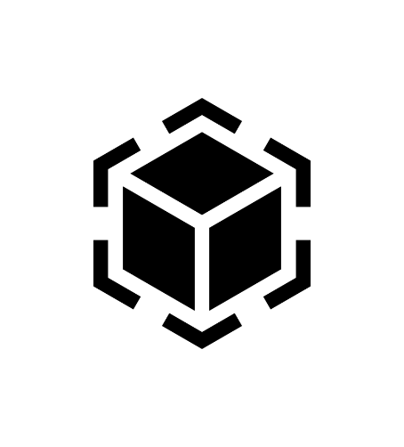
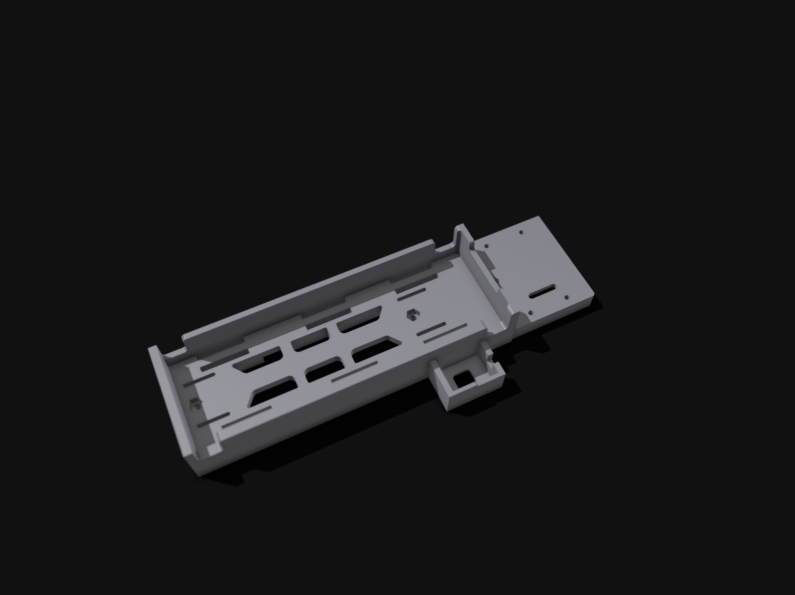
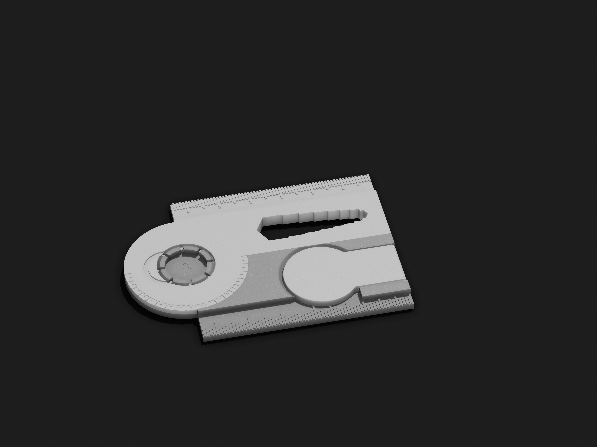
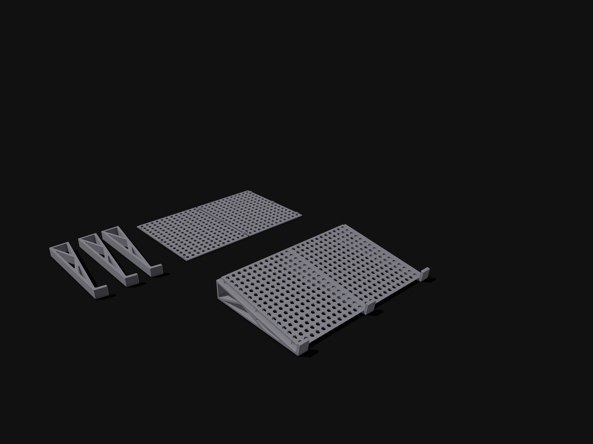

3D Modeling
2023Dinge, die es so nicht zu kaufen gibt: Objekte, die ich modelliere, weil ich sie selbst brauche — und dann ausdrucke.

- Rolle
- Konstruktion & Druck
- Team
- Einzelprojekte
- Kontext
- Studium & Freizeit
- Werkzeuge
- Shapr3D (iPad) · Vectorworks
Vom Problem direkt zum Bauteil
In meiner Freizeit modelliere ich Objekte für meinen 3D-Drucker — meistens dann, wenn es für ein konkretes Problem einfach keine passende Lösung zu kaufen gibt. Hier sind ein paar davon; die STL-Dateien liegen im Repository.
Messestand
Die Aufgabe war, einen Messestand so zu gestalten, wie er mir gefällt — mit der Auflage, ihn in einzelne, transportierbare Teile zu zerlegen. Entstanden ist eine modulare Konstruktion, die sich auf- und abbauen lässt.
RC-Akkuhalter
Ein Halter, der den Akku eines RC-Cars sicher an Ort und Stelle hält — passgenau auf das Chassis konstruiert und direkt am iPad modelliert.

Smartruler
Ein smartes Taschenlineal als Multitool: Lineal, Winkelmesser, Schlüsselweiten und Einkaufswagen-Chip in einem einzigen gedruckten Teil.

Laptop-Ständer
Ziel war ein Ständer, der sich beim Tippen angenehm anfühlt, Luft zur Kühlung durchlässt und trotzdem transportabel bleibt. Drei Anforderungen, ein Bauteil.
